<!DOCTYPE html>
<html lang="es">

<head>
  <meta charset="UTF-8" />
  <meta name="viewport" content="width=device-width, initial-scale=1.0" />
  <title>Footer</title>

  <!-- CSS (SE MANTIENE ENLAZADO) -->
  <link rel="stylesheet" href="../estilos-css/footer.css">

  <!-- FUENTE -->
  <link href="https://fonts.googleapis.com/css2?family=Nunito:wght@400;700;800&display=swap" rel="stylesheet">

  <!-- ICONOS -->
  <link rel="stylesheet" href="https://cdnjs.cloudflare.com/ajax/libs/font-awesome/6.5.0/css/all.min.css">
</head>

<body>

  <footer class="footer">

    <div class="footer-container">

      <!-- LOGO + TEXTO -->
      <div class="footer-logo">

        

  

      </div>

      <!-- ENLACES -->
      <div class="footer-section">
        <h3>Enlaces</h3>
        <a href="../inicio/index.html">Inicio</a>
        <a href="../nosotros/nosotros.html">Nosotros</a>
        <a href="../servicios/servicios.html">Cursos</a>
        <a href="../catalogo/catalogo.html">Emprendedoras</a>
        <a href="../preguntas-frecuentes/Preguntas.html">Preguntas frecuentes</a>
        <a href="../contactenos/contactenos.html">Contacto</a>
      </div>

   <!-- REDES SOCIALES -->

<div class="footer-section">


<h3>Conéctate con Baraka</h3>

<a
    href="https://www.facebook.com/corporacion.baraka.2024"
    target="_blank"
    rel="noopener noreferrer">

    <i class="fa-brands fa-facebook"></i>
    Facebook

</a>

<a
    href="https://wa.me/573054643307"
    target="_blank"
    rel="noopener noreferrer">

    <i class="fa-brands fa-whatsapp"></i>
    WhatsApp

</a>

<a
    href="#"
    target="_blank"
    rel="noopener noreferrer">

    <i class="fa-brands fa-linkedin"></i>
    LinkedIn

</a>


</div>


    </div>

    <!-- =====================================================
     MODAL AVISO LEGAL
===================================================== -->

<div class="modal-legal" id="modalAvisoLegal">

    <div class="modal-legal-contenido">


        <div class="modal-legal-header">

            <div class="modal-legal-icono">
                <i class="fa-solid fa-scale-balanced"></i>
            </div>

            <div>

                <span>Corporación Baraka</span>

                <h2>Aviso legal</h2>

            </div>

        </div>

        <div class="modal-legal-body">

            <h3>Aviso de términos y condiciones de uso de esta web</h3>

            <p>
                El presente Aviso Legal regula el acceso, navegación y utilización
                del sitio web de <strong>Corporación Baraka</strong>, entidad sin
                ánimo de lucro legalmente constituida y registrada ante la Cámara
                de Comercio de Bogotá.
            </p>

            <p>
                Corporación Baraka se encuentra identificada con NIT
                <strong>901844127-7</strong>.
            </p>

            <p>
                El acceso y navegación por este sitio web atribuyen la condición
                de usuario e implican la aceptación de las disposiciones contenidas
                en este Aviso Legal y en las demás políticas publicadas en el sitio.
            </p>

            <h3>1. Responsable del sitio web</h3>

            <p>
                El responsable del presente sitio web es
                <strong>Corporación Baraka</strong>, entidad sin ánimo de lucro,
                identificada con NIT <strong>901844127-7</strong>.
            </p>

            <p>
                El sitio web tiene carácter informativo y tiene como finalidad
                proporcionar información sobre la organización, sus programas,
                actividades, procesos de formación, emprendimiento,
                acompañamiento, convocatorias, eventos y demás iniciativas.
            </p>

            <h3>2. Condiciones generales de uso</h3>

            <p>
                El usuario se compromete a utilizar este sitio web de conformidad
                con la legislación colombiana vigente, la buena fe y el orden
                público.
            </p>

            <p>
                No está permitido utilizar el sitio web para realizar actividades
                ilícitas, fraudulentas, abusivas o que puedan afectar el normal
                funcionamiento de la plataforma, los sistemas tecnológicos,
                contenidos, información, derechos o intereses de Corporación Baraka
                o de terceros.
            </p>

            <h3>3. Información publicada</h3>

            <p>
                La información publicada en este sitio tiene carácter informativo
                y orientativo. Corporación Baraka procura mantener actualizados
                sus contenidos, aunque pueden presentarse cambios o actualizaciones
                relacionados con sus programas y actividades.
            </p>

            <h3>4. Obligaciones del usuario</h3>

            <p>
                El usuario deberá utilizar el sitio web de manera responsable y
                respetuosa y se abstendrá de:
            </p>

            <ul>

                <li>
                    Utilizar el sitio web con fines ilícitos.
                </li>

                <li>
                    Intentar acceder sin autorización a sistemas o información
                    restringida.
                </li>

                <li>
                    Introducir virus, código malicioso o mecanismos que puedan
                    afectar el funcionamiento del sitio.
                </li>

                <li>
                    Utilizar información obtenida del sitio para perjudicar a
                    Corporación Baraka o a terceros.
                </li>

                <li>
                    Reproducir o utilizar contenidos protegidos sin autorización.
                </li>

            </ul>

            <h3>5. Propiedad intelectual</h3>

            <p>
                Los textos, fotografías, imágenes, logotipos, diseños, videos,
                material audiovisual, código, estructura y demás contenidos que
                sean titularidad de Corporación Baraka se encuentran protegidos
                por las normas aplicables en materia de propiedad intelectual
                y derechos de autor.
            </p>

            <p>
                El uso del contenido del sitio no implica la transferencia de
                derechos de propiedad intelectual al usuario.
            </p>

            <h3>6. Enlaces externos</h3>

            <p>
                El sitio web puede contener enlaces o referencias a sitios web
                de terceros. Corporación Baraka no controla necesariamente sus
                contenidos, disponibilidad o políticas de privacidad.
            </p>

            <h3>7. Disponibilidad del sitio</h3>

            <p>
                Corporación Baraka procurará mantener disponible y funcionando
                adecuadamente el sitio web. Sin embargo, pueden presentarse
                interrupciones por mantenimiento, actualizaciones, fallas técnicas,
                problemas de conectividad o circunstancias de terceros.
            </p>

            <h3>8. Protección de datos personales</h3>

            <p>
                El tratamiento de los datos personales recopilados a través de
                este sitio web se realizará de acuerdo con la legislación
                colombiana aplicable y con la
                <strong>Política de Privacidad de Corporación Baraka</strong>.
            </p>

            <h3>9. Legislación aplicable</h3>

            <p>
                Las relaciones derivadas del acceso y utilización de este sitio
                web se regirán por las leyes de la República de Colombia.
            </p>

            <h3>10. Contacto</h3>

            <p>
                Para realizar consultas relacionadas con este Aviso Legal,
                el usuario podrá utilizar los canales oficiales de contacto
                publicados en el sitio web de Corporación Baraka.
            </p>

            <p class="texto-actualizacion">
                <strong>Última actualización:</strong> septiembre de 2026.
            </p>
            <div class="acciones-modal">
    <button type="button"
            class="btn-aceptar"
            onclick="document.getElementById('modalAvisoLegal').classList.remove('activo'); document.body.style.overflow='';">
        Aceptar
    </button>

    <button type="button"
            class="btn-cerrar"
            onclick="document.getElementById('modalAvisoLegal').classList.remove('activo'); document.body.style.overflow='';">
        Cerrar
    </button>
</div>

        </div>

    </div>

</div>

<!-- =====================================================
     MODAL POLÍTICA DE PRIVACIDAD
===================================================== -->

<div class="modal-legal" id="modalPoliticaPrivacidad">

    <div class="modal-legal-contenido">

        <div class="modal-legal-header">

            <div class="modal-legal-icono">
                <i class="fa-solid fa-shield-halved"></i>
            </div>

            <div>

                <span>Corporación Baraka</span>

                <h2>Política de privacidad</h2>

            </div>

        </div>

        <div class="modal-legal-body">

            <h3>Política de privacidad</h3>

            <p>
                <strong>Corporación Baraka</strong>, entidad sin ánimo de lucro
                identificada con NIT <strong>901844127-7</strong>, reconoce la
                importancia de proteger la privacidad y los datos personales de
                las personas que interactúan con sus canales digitales.
            </p>

            <p>
                Esta Política establece los lineamientos generales aplicables al
                tratamiento de los datos personales que puedan ser recopilados a
                través del sitio web y de los canales relacionados con las
                actividades de Corporación Baraka.
            </p>

            <p>
                El tratamiento de los datos personales se realizará de conformidad
                con la legislación colombiana vigente en materia de protección de
                datos personales, incluyendo la Ley 1581 de 2012 y las normas que
                la reglamenten, modifiquen o sustituyan.
            </p>

            <h3>1. Responsable del tratamiento</h3>

            <p>
                El responsable del tratamiento de los datos personales es
                <strong>Corporación Baraka</strong>, identificada con NIT
                <strong>901844127-7</strong>.
            </p>

            <h3>2. Principios aplicables</h3>

            <p>
                Corporación Baraka aplicará los principios establecidos por la
                legislación colombiana para el tratamiento de datos personales,
                incluyendo legalidad, finalidad, libertad, transparencia,
                seguridad y confidencialidad.
            </p>

            <h3>3. Datos personales que pueden ser recopilados</h3>

            <p>
                Dependiendo de la interacción realizada con Corporación Baraka,
                podrán solicitarse datos como:
            </p>

            <ul>

                <li>Nombre y apellidos.</li>

                <li>Correo electrónico.</li>

                <li>Número telefónico.</li>

                <li>Ciudad o lugar de residencia.</li>

                <li>Información relacionada con actividades de formación.</li>

                <li>Información relacionada con emprendimientos o iniciativas.</li>

                <li>
                    Información suministrada voluntariamente mediante formularios.
                </li>

            </ul>

            <h3>4. Obtención de datos personales</h3>

            <p>
                Los datos personales pueden ser suministrados directamente por
                sus titulares mediante formularios, procesos de inscripción,
                participación en actividades, contacto institucional, correo
                electrónico, convocatorias y otros medios habilitados por
                Corporación Baraka.
            </p>

            <h3>5. Finalidades del tratamiento</h3>

            <p>
                Los datos personales podrán ser tratados para:
            </p>

            <ul>

                <li>
                    Atender solicitudes, preguntas y comunicaciones.
                </li>

                <li>
                    Gestionar procesos de inscripción y participación.
                </li>

                <li>
                    Administrar programas, cursos, talleres y actividades.
                </li>

                <li>
                    Realizar seguimiento a participantes y beneficiarios.
                </li>

                <li>
                    Gestionar actividades relacionadas con emprendimiento.
                </li>

                <li>
                    Comunicar información relacionada con actividades,
                    eventos, convocatorias o programas.
                </li>

                <li>
                    Elaborar informes y estadísticas.
                </li>

                <li>
                    Cumplir obligaciones legales.
                </li>

            </ul>

            <h3>6. Autorización</h3>

            <p>
                Cuando la legislación lo requiera, Corporación Baraka solicitará
                al titular la autorización previa, expresa e informada para el
                tratamiento de sus datos personales.
            </p>

            <h3>7. Derechos de los titulares</h3>

            <p>
                De acuerdo con la legislación colombiana aplicable, los titulares
                podrán:
            </p>

            <ul>

                <li>
                    Conocer, actualizar y rectificar sus datos personales.
                </li>

                <li>
                    Solicitar prueba de la autorización otorgada.
                </li>

                <li>
                    Conocer el uso dado a sus datos.
                </li>

                <li>
                    Presentar consultas y reclamos.
                </li>

                <li>
                    Solicitar la supresión de sus datos cuando corresponda.
                </li>

                <li>
                    Revocar la autorización cuando sea legalmente procedente.
                </li>

                <li>
                    Acceder gratuitamente a sus datos personales en los términos
                    establecidos por la ley.
                </li>

            </ul>

            <h3>8. Consultas y reclamos</h3>

            <p>
                El titular podrá presentar consultas o reclamos relacionados con
                el tratamiento de sus datos personales a través de los canales
                oficiales de contacto de Corporación Baraka publicados en este
                sitio web.
            </p>

            <h3>9. Seguridad de la información</h3>

            <p>
                Corporación Baraka adoptará medidas técnicas, administrativas y
                organizativas razonables para proteger los datos personales frente
                a pérdida, destrucción, alteración, acceso, uso o divulgación no
                autorizados.
            </p>

            <h3>10. Conservación de los datos</h3>

            <p>
                Los datos personales serán conservados durante el tiempo necesario
                para cumplir las finalidades para las cuales fueron recopilados,
                atender obligaciones legales, administrativas o resolver posibles
                reclamaciones.
            </p>

            <h3>11. Niños, niñas y adolescentes</h3>

            <p>
                Corporación Baraka reconoce la especial protección de los datos
                personales de niños, niñas y adolescentes. Cuando una actividad
                implique el tratamiento de sus datos, se aplicarán las garantías
                establecidas por la legislación colombiana.
            </p>

            <h3>12. Fotografías y videos</h3>

            <p>
                En determinadas actividades institucionales pueden realizarse
                fotografías o grabaciones audiovisuales. Cuando dicho material
                permita identificar a una persona y constituya tratamiento de
                datos personales, se gestionarán las autorizaciones correspondientes
                de acuerdo con la legislación aplicable.
            </p>

            <h3>13. Cookies</h3>

            <p>
                El sitio web puede utilizar cookies u otras tecnologías similares
                necesarias para su funcionamiento, seguridad, configuración o
                análisis, dependiendo de las herramientas implementadas.
            </p>

            <h3>14. Terceros</h3>

            <p>
                Para determinadas actividades, Corporación Baraka podrá apoyarse
                en proveedores tecnológicos o terceros que requieran tratar
                información personal por cuenta de la organización.
            </p>

            <h3>15. Actualización de la política</h3>

            <p>
                Corporación Baraka podrá modificar esta Política de Privacidad
                cuando resulte necesario para adaptarla a cambios legislativos,
                administrativos, tecnológicos o relacionados con sus actividades.
            </p>

            <h3>16. Contacto</h3>

            <p>
                Para ejercer los derechos relacionados con sus datos personales,
                presentar consultas o reclamos, o solicitar información sobre el
                tratamiento de sus datos, el titular podrá utilizar los canales
                oficiales de contacto de Corporación Baraka publicados en este
                sitio web.
            </p>

            <p class="texto-actualizacion">
                <strong>Última actualización:</strong> septiembre de 2026.
            </p>
            <div class="acciones-modal">
    <button type="button"
            class="btn-aceptar"
            onclick="document.getElementById('modalPoliticaPrivacidad').classList.remove('activo'); document.body.style.overflow='';">
        Aceptar
    </button>

    <button type="button"
            class="btn-cerrar"
            onclick="document.getElementById('modalPoliticaPrivacidad').classList.remove('activo'); document.body.style.overflow='';">
        Cerrar
    </button>
</div>

        </div>

    </div>

</div>


   <div class="footer-bottom">
<div class="footer-legal">

    <a href="javascript:void(0)" onclick="document.getElementById('modalAvisoLegal').classList.add('activo'); document.body.style.overflow='hidden';">
        Aviso legal
    </a>

    <span>|</span>

    <a href="javascript:void(0)" onclick="document.getElementById('modalPoliticaPrivacidad').classList.add('activo'); document.body.style.overflow='hidden';">
        Política de privacidad
    </a>

</div>

    <p>
        © 2026 Baraka. Todos los derechos reservados.
    </p>

</div>


  </footer>

</body>

</html>